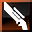

Luster is the fourth and final scion class released for PSO2. It requires you to have two classes at 75+, and unlocks the ability to become a Luster on any character. Like Phantom and Etoile, it cannot take a subclass, but it can be used as a subclass. It uses Gunblades, Gunblades, and Gunblades as it's main weapons (Noticing a pattern?). It is an inherently agressive class with it's own unique mechanic, and a bit complicated and different from the other classes. Because of this, we'll need to do a bit of explaining first.
There are three different "styles" for Luster, named after the compound techniques. Each style bring various differences including the color/element of the attacks, your focus meter, the actions you can use, and more. The style you use depends on what element the Gunblade you have equipped is.
 Fomel Style (Fire/Dark): This style is designed for bosses and single targets.
Fomel Style (Fire/Dark): This style is designed for bosses and single targets.
Baran Style (Light/Ice): This style is designed for defense.
Zandi Style (Wind/Lightning): This style is designed for AOE and mobbing.
If you have trouble remembering which is which:
Fomel (Foie, Fire tech)
Baran (Barta, Ice tech)
Zandi (Zanverse, Wind tech)
If you only have one Gunblade and literally can't get any others, Fomel would be the one style you use because it's DPS is higher then the others. However, it is highly recommended to do 3 styles, as each has their own unique uses.
Before we take a look at the styles, we need to go over some terminology for Luster.
Voltage: Voltage is an additional gauge for Luster, next to the focus gauge. Every time you hit an enemy (including mag attacks), the meter rises. As it rises, it increases both the damage you deal and your defense against incoming damage (0.02% damage increase per voltage, 0.04% damage reduction per voltage). As your voltage increases, various skills can activate from it. If you don't hit anything for 5 seconds, you lose all Voltage.
Move Art: A Move Art is when you use a PA while holding a direction (Forward/Back/Left/Right or any point inbetween).
Stay Art: A Stay Art is when you use a PA without holding any direction.
Enhance Art: When you use a PA and hold the PA button, you will do another (new) part of the attack. This is called an Enhance Art. It consumes 1 focus gauge.
Purge Style: When you doubletap the Weapon Action button, you switch to Purge Style (A neutral element style) for 10 seconds. While in this state, you gain no quirks (unlike the other styles) except for firing your Gunblade rapidly when you hold the Weapon Action button. This consumes both gear and PP, as if you were pretending to be a bad Phantom player (This is a callout post). If you hit an enemy with this skill, you gain 3 gear back instantly.
Quick Slash: After using a PA (or Slash Fall/Slash Rise, we'll talk about those in the next section), you may notice a horizontal line glowing on your character. Pressing the normal attack button while it is visible will do a special attack based on the direction you're holding (or lack thereof). Holding a direction will make you lunge in that direction while slashing. Not holding a direction will execute a ranged multiple hit attack.
Quick Shoot: After doing your fourth normal attack (unlocked via the skill tree), you can tap the Weapon Action button to do different things, depending on your chosen style. There are also ways to do it unique to each style, which we'll go over a bit later.
Photon Cluster: An object that shows up near your body and gives you different beneficial effects. It's also activated differently in each style.
Each style has the same basic normal attacks (a fourth normal attack is unlocked via the skill tree) and PAs (with the exception of a ranged attack being added to normal attacks for the Zandi style), though colored in different auras (and using different elements, duh!). If you doubletap the dodge (Doubledodging? Is that a word? It is now.) button, some different things will happen if you're locked onto an enemy. Doubledodging forward will slash the air repeatedly around you, doubledodging backwards will shoot homing lasers. Doubledodging to either side will do the Apex Legends slide while shooting photon bullets.
The non-element skill makes it so that the element type of your weapon does not affect your damage - it only determines what style you use. This means you don't have to worry about using Fomel style against a Light weak boss, for example.
Tapping the weapon action is also the same in each style, it simply shoots or dodges and shoots if you're holding a direction. Doubletapping the Weapon Action button will execute the Purge Style skill and put you into the non-element state. Additionally, jumping after an attack while holding a direction will use Slash Rise, a 10 PP costing attack that moves you up a bit. Jumping after an attack while not holding a direction will use Slash Fall, which slams you into the ground (and is weaker if you're already on the ground). For both of these, if you hold jump, you will cast an uncharged Zanverse at the end (or Megiverse if your HP is under 75%!).
Let's take a look at the different styles, along with what they do!
 Fomel Style (Fire/Dark): Voltage charges faster by using the skills mentioned here. Holding the normal attack button summons 3 Photon Spears that will damage enemies and cast Jellen (attack debuff) on them when you use Photon Arts (up to 3 times). Very useful if you have Phrase Decay (enemy takes more damage if they have Jellen on them). Holding the Weapon Action button will stab the enemy repeatedly ala Stinger from DMC and follow it up with a final thrust. The damage, duration, and distance of the final thrust is dependent on how long you hold it and how much focus you use.
Fomel Style (Fire/Dark): Voltage charges faster by using the skills mentioned here. Holding the normal attack button summons 3 Photon Spears that will damage enemies and cast Jellen (attack debuff) on them when you use Photon Arts (up to 3 times). Very useful if you have Phrase Decay (enemy takes more damage if they have Jellen on them). Holding the Weapon Action button will stab the enemy repeatedly ala Stinger from DMC and follow it up with a final thrust. The damage, duration, and distance of the final thrust is dependent on how long you hold it and how much focus you use.
Fomel style's Photon Cluster is activated by doing two different Photon Arts back to back, but doing the second one the moment the Perfect Attack window appears. This surrounds you with... things blades photons bits from Gundam that do damage in an AOE and restore 5 PP with each hit.
Fomel's Quick Shoot is activated by doing an Enhanced Combo - two Enhanced Arts back to back (while performing an enhanced art, press the PA button again when you have a focus gauge) - followed by pressing Weapon Action after a minor delay. It jumps you towards your enemy while slamming them with your Gunblade, like the Stinger move from Devil May Cry.
Baran Style (Light/Ice): Voltage charges faster by using Stay Arts in this style. Normal attacks (aside from step attacks) and Stay Arts have guard frames at the start. Holding the normal attack button generates an AOE that deals damage with paper airplanes. Holding the Weapon Action button will charge a photon bullet that does a large amount of damage. Holding down the Weapon Action button will do more damage, consuming more focus in the process.
Baran style's Photon Cluster is activated by performing a Just Guard (guarding the moment an attack is about to hit you). Keep in mind that this means attacking using a Normal Attack or Stay Arts, since those are how this class guards. This surrounds you with metal mario shield bits from Gundam 00 and decreases your damage taken by 25%.
Baran's Quick Shoot is activated by doing a counter, then using your Weapon Action after a slight delay. It fires a very quick shot of ice that has a long range.
Zandi Style (Wind/Lightning):
Voltage charges faster by using Move Arts. Hold the Normal Attack button to generate an AOE pull-in (a la Zondeel). Holding the Weapon Action button casts an AOE field that damages all enemies in it on release. Holding down the Weapon Action button will make it bigger (up to 2 times), consuming more focus in the process.
Zandi style's Photon Cluster is activated by dodging an attack with a sideways dodge or with the Weapon Action. This, like redbull, gives you wings and lets you fire bolts from the space above you after hitting an enemy with a PA, dealing damage and restoring 5 PP.
Zandi's Quick Shoot is activated by doing a counter while holding left or right, then using your Weapon Action almost immediately. It shoots a bolt of lightning that hits every enemy in your small AOE range.
Luster Time: This activates your Photon Cluster, gives you a 30% damage reduction on incoming damage, and 200% PP gain for a limited time. It also does burst damage on activation, and restores all your gear if it damages an enemy. Press it again to do a powerful
Luster Counter: Doing a step attack (dodge + normal attack) becomes a counterattack (and a lot stronger!) if you dodge at the last minute. If you're familiar with Hero Counter, this is exactly the same thing.
Luster Step Guard: While locked onto an enemy, dodge an attack while holding forwards or backwards to perform a Step Guard, shooting homing lasers at the enemy.
Fomel Style
Tryhard Combo
Brand Extension -> Quick Slash (Stay Art) -> Enhanced Normal Attack -> Flechette -> Enhanced Flechette -> Enhanced Flechette -> Quick Shoot -> Backwards Quick Slash -> Enhanced Normal -> Repeat
Holy crap. If you want to main Luster and feel very confident in your timing of things, feel free to use this combo. It is very strict in timings. However, this combo is essentially infinite PP and Gear Rotation. You can also swap in Brand Extension instead of Flechette if you want less strict timings.
Keep-Your-Sanity Combo
Flechette (Stay Art, Enhanced) x3 -> Quick Slash (Stay Art) -> Enhanced Normal -> 4 Normal Attacks -> Quick Shoot -> Repeat
Baran Style
Since most things don't generate gear, the combo for Baran is just Enhanced Normal -> 4 Normal Attacks -> Quick Shoot. You can also do the Fletchette combo from Fomel.
Zandi Style
Single Target
Flechette (Move Art) -> Brand Extension (Move Art) -> Slug Scatter (Move Art) -> Enhanced Hollow Point (Move Art) -> Repeat
You can also freely swap Slug Scatter and Hollow Point in the above combo.
Mobbing
Enhanced Normal -> Brand Extension (Move Art) -> Quick Slash (Stay Art) -> Enhanced Normal -> Brand Extension (Move Art) -> Enhanced Brand Extension (Move Art) x2 -> Quick Slash (Move backwards) -> Repeat
You can also use Slug Scatter instead of Brand Extension for this combo.
Skill Tree/Skills
A typical Luster skill tree can be found here. It's a base tree - Feel free to change the points in Voltage Reset Heal and Complete Rest as you want.. Remember that percentage multipliers are always better than straight additions, so a 5% increase to something will almost always be better than doing +5 to it.
Rings
Left Rings
- Mate Maniac: Speeds up the consumption animation of -mate items.
 Atomizer Fanatic: Speeds up the consumption animation of Moon/Sol/Star Atomizers and increases their recovery rate.
Atomizer Fanatic: Speeds up the consumption animation of Moon/Sol/Star Atomizers and increases their recovery rate.
 Party Toughness: Reduces damage taken based on the number of players in your Party. Does nothing if you're solo.
Party Toughness: Reduces damage taken based on the number of players in your Party. Does nothing if you're solo.
 Leaping Dodge: Gives you a active skill that lets you jump super high.
Leaping Dodge: Gives you a active skill that lets you jump super high.
- Mag Excitement: Increases the power of your Mag's Auto Action and reduces its cooldown.
You can slot 3 of these into units, then just wear the last one as a normal ring.
Right Rings
 Critical Strike (Combo Ring): Increases your crit power for all 3 attack stats by 3% and your crit rate for all 3 stats by 20% (at level 20)
Critical Strike (Combo Ring): Increases your crit power for all 3 attack stats by 3% and your crit rate for all 3 stats by 20% (at level 20)
Mag
Your Mag's total attack stats (Melee, Range, and Tech) are added up and then distributed evenly to all three stats - So it doesn't matter which kind of attack mag you're using (as long as it has all it's points in attack!).
Movement skill
Luster can use Flechette to move rapidly as opposed to just running. Gotta go fast!
- airoh. for letting me steal their layout for the initial version of this guide
- Advisors on Phantasy Star Fleet for advice/information
- Blue Skies/Lunasaurus/Riko/Yukiexa for teaching me how Luster works and making me a pro
- LamiaPony on Reddit for their Luster posts and information (Seriously, thank you - A lot of information you wrote was used here!)
- Arks Visiphone for icons and data
- Everyone who asked for this guide
February 3rd, 2021
Fixed some issues, added NA terms (with JP toggle). Enjoy!
December 1st, 2020
All finished! Guide is public! Time to
November 30th, 2020
Suffer greatly, you must, to master the Luster. Everything is done but basic combos.
Trying to finish the guide today so I can make it public \ o /
November 21st, 2020
Might as well go all the way, right? The first version of this guide is created today.